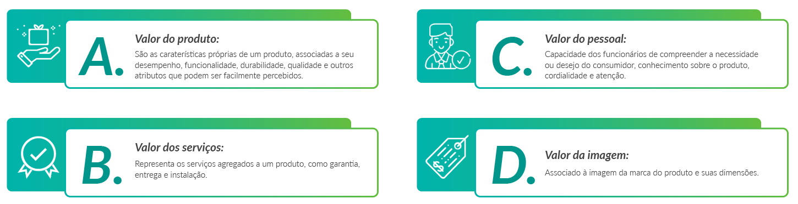
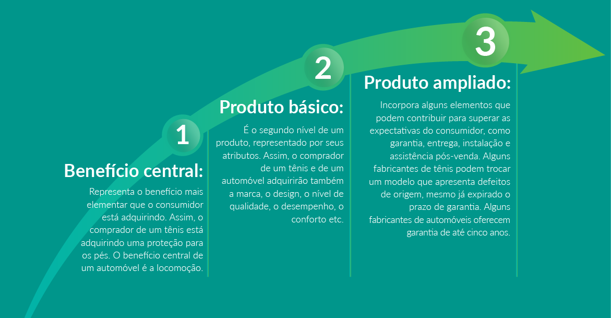

Conceito de produto: produtos de consumo e industriais
Os benefícios que um consumidor percebe em um produto podem ser melhor compreendidos sob a perspectiva do valor entregue ao cliente. Esta perspectiva não se refere ao valor financeiro.
O valor total representa os benefícios que os consumidores esperam de certo produto, sendo representados como a seguir.
FIGURA 1 – Benefícios esperados pelo consumidor
click na imagem para dar zoom
As dimensões acima contribuem para que um produto seja melhor percebido pelos consumidores e ainda para diferenciá-lo da concorrência.
Assim, podem ser incorporados neste conceito eventos, pessoas, lugares, bens físicos, serviços, ideias etc.
Os atributos de um produto relacionam-se ao seu design, nível de qualidade, durabilidade e marca. São esses atributos que servem para os consumidores caracterizarem um produto.
Os produtos podem ser classificados em duas dimensões:
A) Bens de consumo: referem-se aos bens que são adquiridos pelo consumidor final
Click para interagir
Click para interagir
Click para interagir

Click para interagir
Antigamente, a principal função da embalagem era guardar e proteger o produto. Nos últimos tempos, entretanto, a embalagem se tornou uma importante ferramenta de marketing. Veja a figura abaixo:
FIGURA 2 - Função da Embalagem
Fonte: Ânima Digital.
B) Bens empresariais: são os bens que integram o processo produtivo de uma organização. Ou seja, são utilizados para fabricar produtos.
Click para interagir
Click para interagir
Click para interagir
Click para interagir
Níveis de produto
No processo de planejamento de um produto, é necessário considerar os seus níveis. Kotler e Armstrong (2015) sugerem que um produto pode ter três níveis:
FIGURA 3 – Processo de planejamento de um produto e seus níveis.
click na imagem para dar zoom
Atenção
Percebam que cada nível procura agregar um valor (ou benefício) a mais ao produto como alternativa para elevar o seu grau de diferenciação em relação à concorrência e assim mantê-lo competitivo.